地政学
アフリカ連合本部と国連機関、大使館が集まる首都で、国内政治と大陸外交が重なる。紅海、ナイル流域、角アフリカの緊張も、空港と会議場、警備の街路へ反映され、住民の移動や宿泊業にも広く及ぶ政治都市である。

🇪🇹 エチオピア / アフリカ / World City Atlas
標高二千メートルを超える高原首都。AU本部、大使館街、正教会の祝祭、建設現場、鉄道、コーヒーの店先、移住者の住宅地が、アフリカ外交と日常生活を同じ街路で結びます。
都市の骨格
アディスアベバは、エントト山の斜面からボレの空港地区まで高低差を抱えて広がります。AU本部、国連機関、各国大使館が集まる一方、メルカート、住宅地、建設現場、ミニバスの結節点が日常の密度を作ります。
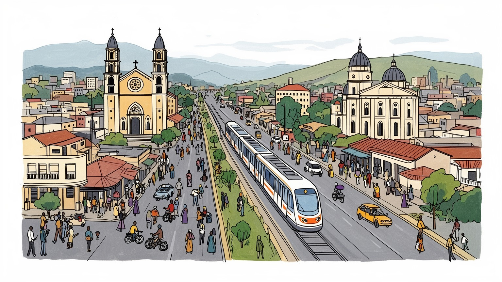
アフリカ連合本部と国連機関、大使館が集まる首都で、国内政治と大陸外交が重なる。紅海、ナイル流域、角アフリカの緊張も、空港と会議場、警備の街路へ反映され、住民の移動や宿泊業にも広く及ぶ政治都市である。
行政、外交、航空、建設、商業、軽工業が雇用を作る。高層ビルの現場、露店、市場、家事労働、配車、工場勤務が成長を支え、若年失業と非公式労働も街の課題として根強く残る。働く場は多様な高原首都である都市だ。
エチオピア正教の暦、断食、祝祭、教会の鐘が都市の時間を刻む。コーヒー、音楽、アムハラ語、オロモ文化、移住者の食と礼拝が重なり、首都の多層性を街角の会話に映している。祈りも身近な高原首都である街だ。
国立博物館、メルカート、エントト山、教会、カフェを巡れる一方、住民には家賃、交通渋滞、水、若者の仕事、住宅格差が日々の課題になる。観光と生活は近く重なり、徒歩の距離も大切な高原の首都である都市だ。
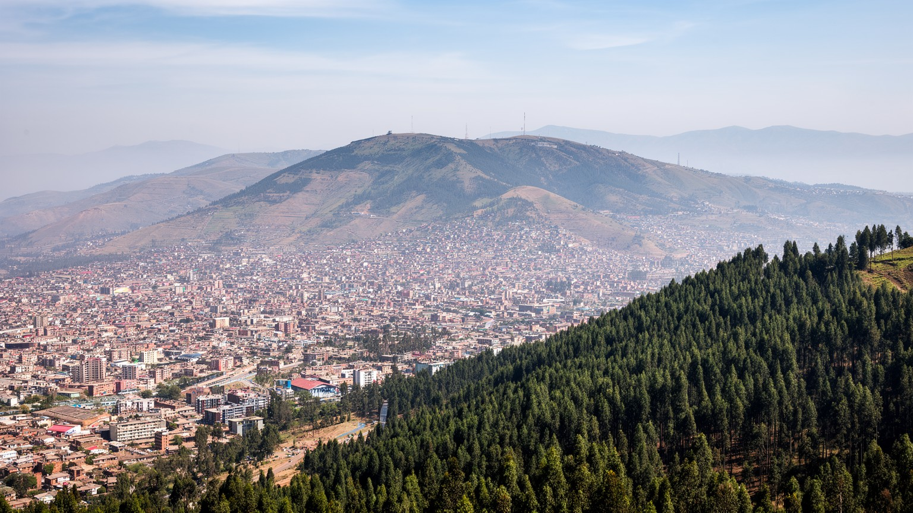
アディスアベバは、エントト山の南麓から空港のあるボレ方面へ下る高原都市です。標高はおおむね二千三百メートル前後にあり、赤道に近い緯度でありながら空気は涼しく、強い日差しと冷える朝夕が同居します。この高原地形は、景色の美しさだけでなく、道路勾配、排水、住宅地の価格、体感気温、交通の混雑に影響します。雨季には斜面を水が走り、未舗装の路地や排水の弱い地区では移動が重くなります。北側の高地は王都の記憶や教会、森の保全と結びつき、南東側の平坦な地区は空港、ホテル、オフィス、国際機関の活動を受け止めます。都市が拡張するほど、周囲のオロミア地域との土地利用、農地、住宅開発の緊張も増します。アディスアベバを読むには、涼しい高原首都という印象の下にある、水、坂、土地、通勤距離の問題を重ねて見る必要があります。標高は観光の眺望であり、同時に日常の負担でもあります。高低差は地区の性格も分けます。眺めのよい斜面には新しい住宅や道路が伸びる一方、谷筋や低い場所では排水、土砂、混雑が課題になります。都市計画が地形を無視すれば、便利な道路はできても歩行者や低所得者の生活は重くなります。高原の都市性は、気候の快適さとインフラの難しさを同時に抱えています。坂の上と下で、通学、買い物、救急、雨の日の移動時間は大きく変わります。
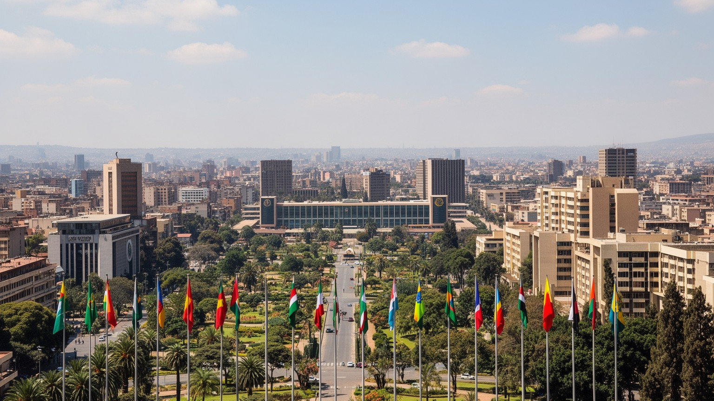
アディスアベバの地政学的な重みは、エチオピアの首都であることに加え、アフリカ連合本部と国連アフリカ経済委員会が置かれている点にあります。首脳会議、和平協議、開発会合、援助機関の調整、地域機構の交渉が市内のホテル、会議場、大使館街で行われ、街はアフリカ政治の作業場になります。角アフリカの紛争、紅海沿岸の港湾問題、ナイル川流域の水資源、移民と難民、気候資金の議論は、抽象的な外交用語ではなく、警備、交通規制、宿泊、通訳、記者、運転手の仕事として都市に現れます。外交都市であることは名誉だけでなく、国際機関と市民生活の距離を常に問うことでもあります。高級ホテルや大使館の近くに、住宅不足、非公式労働、道路渋滞が並ぶため、アディスアベバでは大陸規模の政策と生活の現実が近すぎるほど近い。会議の都市を見るなら、会議場の内側だけでなく、その周囲の労働と警備と移動まで読む必要があります。外交の集積は、空港、通信、ホテル、銀行、翻訳、警備会社、ケータリング、清掃の需要を生み、若い専門職にも機会を与えます。一方で、国際機関の賃金水準と一般市民の所得差は、住宅市場や物価にも影響します。大陸の政治を支える街は、同時にその不平等を日常で受け止めています。国際的な議題が多いほど、首都の信頼性は道路、電力、通信、治安、行政手続きの安定にも左右されます。
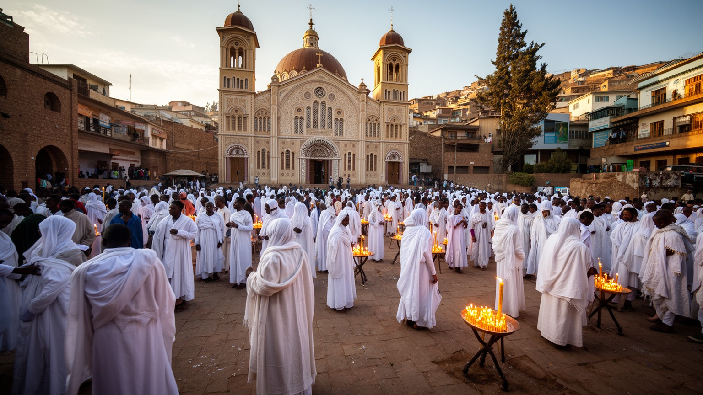
アディスアベバの日常には、エチオピア正教会の暦が深く入り込んでいます。教会の鐘、白いネテラをまとった参拝者、断食期間の食事、ティムカットやメスケルの祝祭は、宗教施設の内側に閉じず、広場、道路、家庭、飲食店の営業時間まで動かします。聖三位一体大聖堂や聖ジョージ大聖堂は、国家と信仰の記憶を宿す場所であり、皇帝、革命、戦争、殉教、現代政治の物語も重なります。同時に、都市にはムスリム、プロテスタント、カトリック、伝統的な信仰を持つ人びとも暮らし、移住者の増加によって礼拝の場所と食の習慣はさらに多様になります。宗教は観光名所の装飾ではなく、労働日、学校、家族行事、近所づきあいを整える時間の制度です。正教会の荘厳さだけを見てしまうと、断食に合わせた市場、祝祭日の交通、路地の小さな祈り、葬送と相互扶助が見えなくなります。アディスアベバの文化を読む入口は、信仰が都市のリズムを作っている事実にあります。祝祭の日には人の流れが変わり、白い衣服の群れが幹線道路や広場を満たします。断食期の料理は飲食店の献立を変え、家族の訪問や贈り物の習慣も商売を動かします。信仰は個人の内面だけでなく、都市のカレンダー、消費、交通、記憶を束ねる公共の力として働いています。だから教会は祈りの場であると同時に、近所の情報、慈善、葬送、相互扶助の拠点にもなります。
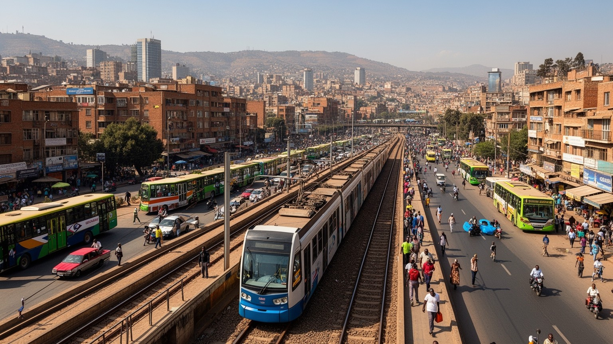
アディスアベバの交通は、近代化の象徴と日常の混雑が同時に見える領域です。市内ライトレールは東西南北の軸を作り、アディスアベバ・ジブチ鉄道は内陸国エチオピアをジブチ港へ結びます。ボレ国際空港はエチオピア航空の拠点としてアフリカ各地、中東、欧州、アジアをつなぎ、外交都市の機能を支えます。しかし住民の移動の多くは、ミニバス、乗合タクシー、徒歩、配車サービス、混雑した道路に依存します。ライトレールの駅が近くても、駅までの歩道、支払い、乗り継ぎ、運行頻度、治安、雨季の移動が使いやすさを左右します。道路建設と高架化は渋滞を減らす一方、歩行者や露店、古い住宅地を押しのけることもあります。交通は単に速くなるかではなく、誰が安く安全に移動できるかの問題です。アディスアベバでは、国際空港から会議場へ向かう車列と、朝の仕事へ向かうミニバス待ちの列が同じ成長都市の風景を作っています。鉄道の近代性は、路地の徒歩と結びついて初めて都市の力になります。交通費は家計にも直結します。中心部に住めない人ほど移動時間が長くなり、乗り換えの不確実さが仕事や学校の遅刻につながります。歩道の狭さ、横断の難しさ、夜間の安全も、都市の公平性を測る基準になります。大きなインフラは必要ですが、最後の数百メートルをどう歩けるかが日常を決めます。
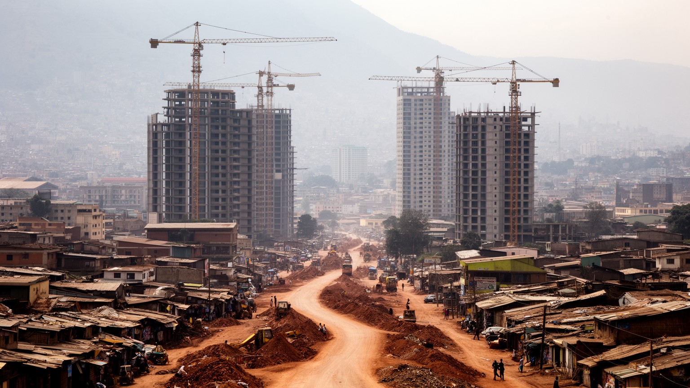
アディスアベバでは、建設の音が都市の成長をもっとも直接に伝えます。幹線道路沿いには高層ビル、ホテル、商業施設、集合住宅、政府施設が増え、古い低層の街区や市場の周辺にも再開発の圧力が及びます。建設は雇用を作り、材料、運搬、警備、食堂、清掃、設計、金融を動かしますが、同時に土地価格と家賃を押し上げ、立ち退きや補償、周辺地域との緊張を生みます。都市の外見が急速に新しくなるほど、誰のための更新なのかが問われます。国際機関や企業が使うオフィス、観光客向けホテル、中間層向け住宅は目立ちますが、低所得者が払える家賃、職場に近い住まい、水や衛生の整った地区は不足しがちです。建設成長は国家の発展を示す舞台である一方、都市の記憶と生活基盤を壊す力にもなります。アディスアベバの未来を考えるには、ビルの高さだけでなく、工事現場で働く人の安全、移転した住民の通勤、古い市場の役割、公共空間の質を同時に見る必要があります。成長の速度は、包容力で測られなければなりません。建設現場では地方から来た若者や日雇い労働者が多く働き、賃金、保護具、休息、事故時の補償が生活を左右します。新しい街路ができるたび、露店の場所、歩行者の動線、教会や市場への道も変わります。都市更新は経済政策であると同時に、記憶と生計をどう扱うかという社会政策でもあります。
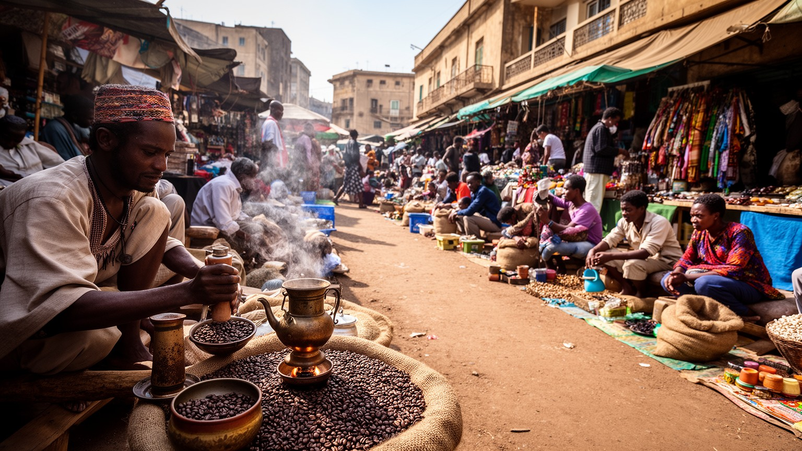
アディスアベバの都市文化を語るうえで、コーヒーは欠かせません。エチオピアはコーヒーの起源を語る国であり、首都の家庭、路上、職場、カフェでは、焙煎の香りとともに会話の時間が作られます。コーヒー・セレモニーは観光客向けの演出である前に、客を迎え、近所と話し、家族の関係を整える日常の作法です。メルカートのような巨大市場では、豆、香辛料、衣類、金物、家畜関連品、輸入品、修理、配送、現金取引が複雑に結びつき、公式統計に表れにくい都市経済が動きます。市場は安い買い物の場所であると同時に、移住者が仕事を得る入口であり、女性の販売労働や若者の運搬仕事が集まる場所でもあります。近代的なモールやチェーン店が増えても、路上の小商いと市場の信用関係は簡単には消えません。コーヒーと市場を見ると、アディスアベバの経済が大企業や国際機関だけではなく、顔の見える取引、待つ時間、交渉、香り、手仕事によって支えられていることが分かります。都市の温度は、会議場よりも店先の小さな椅子でよく見えることがあります。コーヒーは農村との結びつきも示します。首都で飲まれる一杯の背後には、高地の農家、仲買、輸送、輸出、外貨獲得、家庭内の女性労働があります。市場で交わされる価格交渉は、国際商品であるコーヒーと日常の食費を同じ財布に結びつけます。香りのある休憩は、都市経済の緊張をほどく小さな制度でもあります。
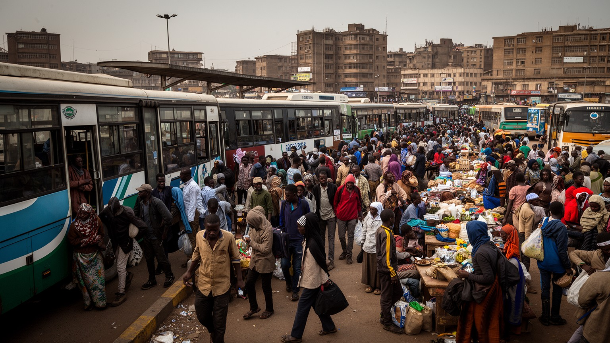
アディスアベバは、エチオピア各地から仕事、教育、避難、親族ネットワークを頼って人が集まる都市です。地方の農村や地方都市から来た若者は、建設、家事労働、警備、販売、運搬、飲食、工場、交通サービスで働き、大学や専門学校へ進む人もいます。首都は機会の場所ですが、住まいの保証、言語や民族の違い、職業訓練、賃金、労働保護が十分でなければ、移住は不安定な生活につながります。女性の家事労働や路上販売、若者の非公式雇用は都市の便利さを支えながら、制度の外に置かれやすい領域です。国内紛争や干ばつの影響を受けた人びとにとって、アディスアベバは安全と支援を探す場所にもなりますが、受け入れる住宅と仕事は限られます。移住者の存在は、首都の文化を豊かにし、食、言語、音楽、礼拝、商売の幅を広げます。同時に、民族間の緊張や差別、行政サービスへのアクセスも課題になります。アディスアベバの成長を読むには、人口増加を数字として見るだけでなく、誰がどの仕事を担い、どの地区に住み、どのような不安を抱えているかを見る必要があります。移住者は親族への送金や地方との商売を通じて、首都と各地域を結び直します。学校や職場では複数の言語が交わり、宗教施設や市場は新しい住民が情報を得る場になります。都市の統合は制度だけでなく、雇用主、大家、近所、教会、市場の関係にも左右されます。
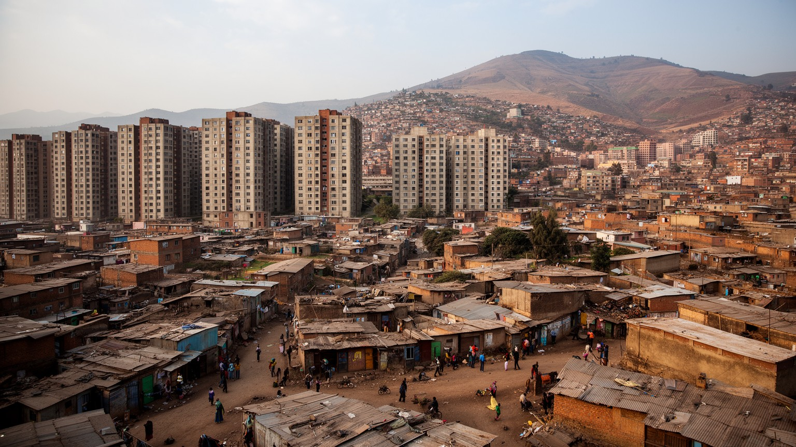
住宅格差は、アディスアベバの日常をもっとも強く分ける問題の一つです。都市中心部やボレ周辺では、国際機関、航空、ホテル、企業活動に近い土地ほど価格が上がり、集合住宅や商業開発が進みます。一方で、低所得世帯は古い住宅、過密な部屋、インフラの弱い周縁部、長い通勤を受け入れざるを得ないことがあります。政府主導の住宅供給やコンドミニアム計画は、多くの世帯に住まいの可能性を開く一方、抽選、支払い能力、立地、交通費の問題を残します。都市の外縁へ移ると家賃は下がっても、仕事、学校、病院、市場へ届く時間と費用が増えます。水、衛生、電気、道路、排水が整っていない地区では、雨季の移動や病気のリスクも高まります。再開発は老朽住宅の安全性を改善する可能性がありますが、長く住んだ人のコミュニティを壊す危険もあります。住宅を単なる建物としてではなく、通勤、親族支援、教会、市場、学校、職場への接続として見ることが必要です。アディスアベバの包容力は、外交都市の顔ではなく、収入の低い人も中心に近い生活を維持できるかで試されます。家賃が上がると、家族は部屋を分け合い、通学や介護の時間を削り、仕事の選択肢を狭めます。住まいの不安は、子どもの学習、女性の安全、病院へのアクセス、災害時の避難にもつながります。住宅政策は福祉ではなく、都市経済を支える基盤です。
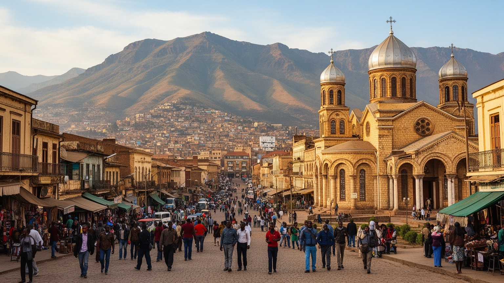
アディスアベバ観光は、短い滞在でも多くの層に触れられる点に特徴があります。国立博物館では古人類の記憶と国家史が結びつき、民族学博物館や大学周辺では多民族国家としてのエチオピアを考える入口が開きます。聖三位一体大聖堂、聖ジョージ大聖堂、メスケル広場は、宗教、帝国、革命、現代政治の記憶を抱えます。メルカートでは商業の迫力があり、エントト山へ上がれば高原都市の広がりと急速な拡張が見えます。カフェやレストランでは、コーヒー、インジェラ、ワット、音楽、家族連れの食事が観光と日常をつなぎます。ただし観光客が見る整った地区と、住民が暮らす過密な住宅地や渋滞の道路には距離があります。観光は都市の魅力を伝える一方、価格上昇や治安管理、文化の見せ方にも影響します。アディスアベバを訪れるなら、名所を点で結ぶだけでなく、祈りの時間、市場の交渉、交通の待ち時間、坂道の歩行、建設中の街区まで含めて見ると、首都の記憶と現在が立体的になります。観光の価値は、都市を消費する速さではなく、生活の厚みを理解する遅さにあります。旅行者にとっては乗り継ぎの街に見えることもありますが、数時間の滞在だけでは宗教暦、市場の朝、夕方の渋滞、家族で飲むコーヒーの時間を見逃します。案内される名所と普段の生活を結び、写真の外側にある労働や移動を想像できるかが、都市理解の深さを決めます。
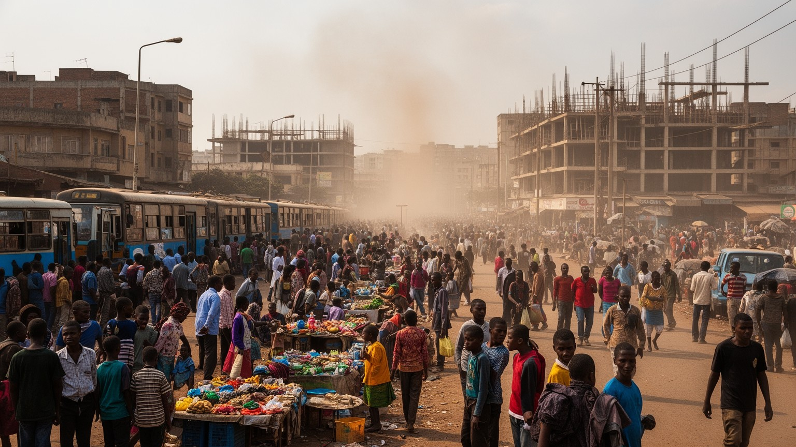
アディスアベバの社会課題は、成長の勢いと切り離せません。新しい道路、鉄道、ホテル、オフィス、住宅は都市の可能性を広げますが、若年失業、物価上昇、住宅不足、非公式労働、交通事故、水と衛生、廃棄物管理、治安不安は日常に残ります。地方から来た人や低所得世帯は、仕事に近い場所へ住みにくく、遠い周縁部から長時間かけて移動します。都市が国際会議を受け入れるほど、外から見える整った顔と、路地の不安定な生活の差が目立ちます。エチオピアの政治的緊張や地域紛争は、首都の言論、警備、移住、家族の送金にも影響します。宗教や民族の多様性は都市の力ですが、差別や不信が高まれば生活の安全を損ないます。社会問題を貧困地区だけの問題として切り離すと、都市全体の脆さを見落とします。市場の労働、家事労働、建設現場、学校、病院、交通結節点を支える人の生活が不安定なら、外交都市としての機能も長くは保てません。アディスアベバの成熟は、速い成長をどれだけ生活の安定へ変えられるかにかかっています。社会課題は暗い側面として後回しにできるものではなく、都市の競争力そのものです。安全な歩道、手頃な住宅、信頼できる水、若者が学び直せる職業訓練、多言語で届く行政情報があって初めて、国際機関の街は住民の街にもなります。成長を生活へ変える制度が、次の都市像を決めます。